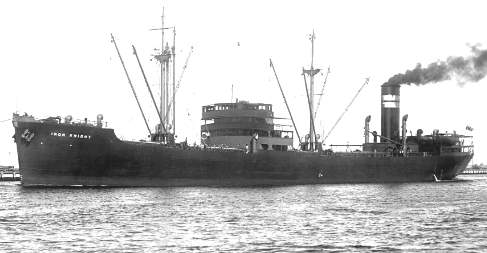
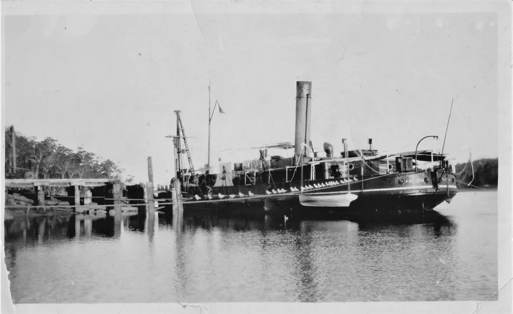
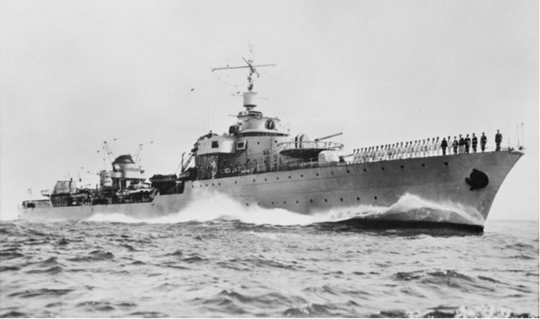
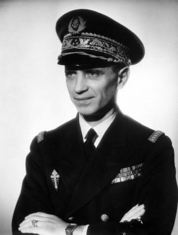
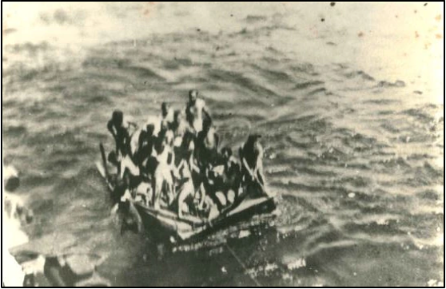
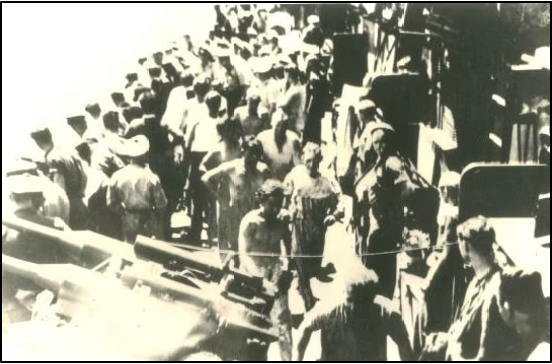
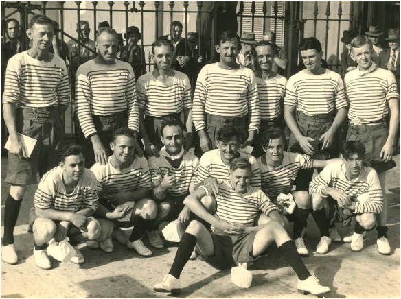
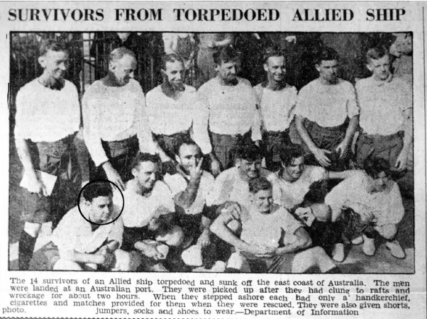
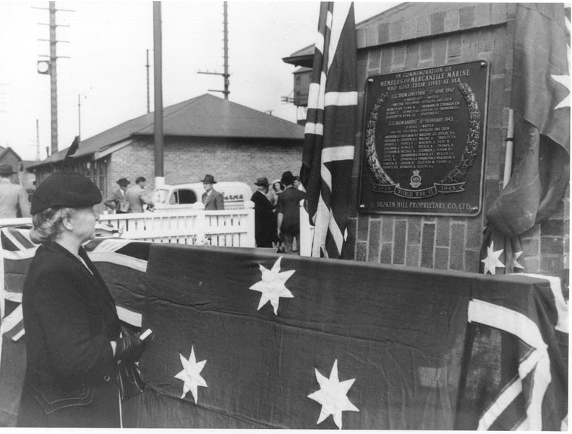

S.S. Iron Knight

The bulk carrier S.S. Iron Knight pictured pre-war. Painted grey after the outbreak of war, the ship would be armed with a single 4-inch gun commanded by a Naval Reservist. A team of merchant seamen drawn from the crew operated the gun and were paid an extra sixpence (around 5 cents) danger pay.
Built in Scotland in 1937, S.S. Iron Knight was one of four Chieftain-class vessels acquired by the Broken Hill Proprietary (BHP) Company for their merchant fleet. Transporting iron ore, Iron Knight would typically operate between Whyalla, Port Kembla and Newcastle. With the outbreak of war with Japan, the BHP fleet suffered heavy losses due to enemy submarine action. On June 3 1942, the SS Iron Chieftain, a sister ship of Iron Knight, sank in five minutes off Manly, Sydney, killing 12 crew. The next day, SS Iron Crown was sunk by a different submarine off Cape Howe. It sank in just 60 seconds with 38 of her 43 crew lost. These ore carriers, being heavily laden with their cargo, were dubbed “death ships” by their crews. Following the successive losses of these two ships, convoys were introduced along Australia’s eastern coast from June 8 1942. This meant that ships would travel together in groups to provide mutual protection and were usually escorted by allied aircraft and warships.
On February 5 1943, SS Iron Knight left Melbourne in Convoy OC 68, bound for
Newcastle. Being the leading ship of the starboard column, Iron Knight was among
twelve other ships which included the escorting Bathurst-class corvettes HMAS
Mildura and Townsville.
On February 8, around 20 kilometers south of Montague Island, the Japanese
submarine I-21 spotted the convoy. Commanded by Matsumura Kanji, I-21 had already
experienced great success in the war. On May 30 1942 I-21 had launched a floatplane
over Sydney Harbour prior to the midget submarine attack in June. On June 8 it shelled
Newcastle and by February 1943, had already attacked five other merchant vessels.
Picking Iron Knight out as the leading ship, Matsumura fired a spread of torpedoes at
2:30 am at long range. Coincidentally, one torpedo passed harmlessly under the bow of
HMAS Townsville but five seconds later it detonated directly below the bridge of Iron
Knight, killing many of the ship’s officers instantly. Iron Knight would sink in less than 2
minutes.
‘I felt the ship shudder, the vessel trembled and the lights started jumping. I ran up the
bunkers to ‘tween decks and then got to the boat deck. She was listing badly and was
afire, but there was no panic. The bosun said “To the boats, boys!” The ship took
another list and went down by the nose. She lifted and the propellers were left racing
out of the water. The vessel took another lurch about 10 feet forward and then
stopped. The cook, an able-bodied seaman, the storekeeper and myself were on the
boat deck. I said “We’ve got to make a go for it”, and I went over the side. At that time
the ship had a list of about 45 degrees. The third engineer stopped the engines and put
the ship hard astern, but it was too late to save her. There were a few men left on the
boat deck when I went overboard.’
-- Survivor Ernest Johnston to the Newcastle Morning Herald, February 9, 1943. --
‘I was asleep in my bunk. I never got over the side, it just went from under me, and I
remember being sucked down with it. How I came up I don’t know, I grabbed a smoke
flare and thought if I can hold my breath long enough, I will definitely come up to the
top… I did not know where I was, I could not see a soul, and called out “anyone there!”
I heard voices, they were a bit away from me on a raft and I managed to swim over.
’
-- John Stone, 17 --
‘I couldn’t extricate myself and was dragged down with the ship, then fortunately
everything seemed to release itself. I came up alongside a trimmer who had cramps
and wasn’t feeling too good [likely Mick Folely]. He kept saying that he was done, but I
encouraged him and with good luck we eventually made the raft.’
-- Survivor James Bates to the Newcastle Morning Herald, February 10, 1943. --
Threat of further attack meant that other merchant ships were prohibited to stop for survivors. Colleen McGuirk, whose brother was onboard a different merchant ship in the convoy, recalled:
‘I remember very well his harrowing story when he returned to port after the sinking. He told of hearing the men in the water calling for help and the Captain ordering “full steam ahead” and not being able to stop to rescue those in the water.

The dredge Antleon at Moruya Quarry Wharf in 1920. Constructed in 1899, this vessel was instrumental in dredging the Moruya River. Antleon was dispatched from Moruya to assist in the search for survivors of the Iron Knight. The vessel was scrapped in the 1970s.
Image Source: Moruya & District Historical Society
HMAS Mildura broke off from the convoy to hunt I-21 to no avail. Visibility was poor in
the dark and no survivors were found. The submarine would escape and sink two more
ships in the following months before being destroyed by American aircraft in
November, 1943.
Several vessels left from Eden and Moruya to search for survivors. From Moruya, this
included the dredge Antleon and some fishing launches, one of which was likely the
Mirrabooka owned by the McDiarmid brothers which had previously rescued the
survivors of the Durenbee in August, 1942.
However, it was the Free French destroyer Le Triomphant that would come to the rescue. Whilst in port in Sydney, the destroyer was ordered south shortly after word of the attack was received. Being one of the fastest destroyers ever made, Le Triomphant travelled at around 37 knots or 70km/h. At 11 am, whilst off Bermagui it spotted the 14 survivors crammed into a single liferaft. The survivors were thankful to be rescued after around 8 hours at sea but, as John Stone recalled, they were disgusted by what they saw below deck with ‘indescribable filth and stench, including live chooks leaving their droppings everywhere.’ It was said that to be windward of the ship was not a pleasant experience.

The Free French Destroyer Le Triomphant. After escaping from Vichy France in July 1940, Le Triomphant would be transferred to the Pacific.
Image Source: AWM P05103.004

Captain of the Le Triomphant, Paul Ortoli.

Photos illegally taken by a sailor aboard the French destroyer Le Triomphant. The 14 survivors are shown in a life raft

Survivors coming aboard with many covered in oil and only wearing their underwear.
Image Source: ABC Listen

The survivors of Iron Knight on dry land in Sydney, 10 February 1943. Taken from the personal album of survivor Keith Smith (seated front), this image shows the men in the iconic blue and white striped sailor shirts of the French navy, given to them by their rescuers.
Image Source: ABC Listen

When a similar image was published in the Newcastle Herald, wartime censors superimposed white blotches over the blue stripes to hide the fact that French vessels were operating off Australia.
Image Source: Newcastle Herald

Mrs D. Ross during the unveiling of the memorial plaque. Mrs Ross was the widow to Master Donald Ross who captained the Iron Knight and was killed when the torpedo detonated below the ship’s bridge.
Image Source: BHP Archives
On August 15 1950 a memorial plaque dedicated to the men killed aboard Iron Chieftain and Iron Knight was unveiled at the Newcastle Steelworks. Essington Lewis, Managing Director of BHP during the war, said in his address that: “We all have a sense of loss in the magnificent ships that went down… unfortunately, no act of ours can replace the valiant men who went down with the ships. They did their duty very well indeed.”
Only 14 of the 50 crew survived. Wartime censorship meant that the names of the 36 fallen weren’t published until after the end of the war. The fallen are listed below:
| Name | Position | Age | Origin |
|---|---|---|---|
| Roy Frederick Anderson | 5th Engineer | 21 | Port Kembla |
| Edward Bedford | 4th Engineer | 21 | Leeds, UK |
| Lawrie Brynes | Coal Trimmer | 43 | Whyalla |
| John Hugh Callinan | Chief Steward | 32 | Newcastle |
| Darrel Crozier Cole | Cadet Officer | 18 | Melbourne |
| Arthur E. Dives | Fireman | 24 | Newcastle |
| Desmond Michael Hamden | Fireman | 25 | Adelaide |
| Kenneth Edward Haynes | 3rd Engineer | 27 | Newcastle |
| Henry Francis Hodgman | Able Seaman | 20 | Gilgandra |
| Harold John Hodson | 2nd Joiner | 35 | Woonona |
| Frederick Laybourne Howes | Able Seaman | 41 | Newcastle |
| Edward Hynes | Greaser | 42 | Liverpool, UK |
| Norman Gleghorn | Able Seaman | 45 | South Shields, UK |
| Kenneth L. Iredale | Able Seaman | 1920 | Newcastle |
| Hans Johannison | Able Seaman | 57 | |
| Basil Jack Johnson | Able Seaman | 23 | Inverell |
| Ronald Harry Jordan | Steward | 23 | Newport, UK |
| Karman Lancaster Peel Kermode | Cadet Officer | 19 | Adelaide |
| Joseph Thomas Maguire | Radio Officer | 22 | Adelaide |
| Cyril Malone | Able Seaman | 20 | Birkenhead, UK |
| John McKenzie | Fireman | 51 | — |
| August Nicker | Boatswain | 51 | Estonia |
| John O'Connor | 3rd Officer | 25 | Newcastle |
| Francis Thomas George Perrin | 2nd Officer | 39 | Cardiff, UK |
| Alfred J. Pinnington | Cook | 42 | Liverpool, UK |
| Donald Ross | Master / Ship Captain | 59 | Shandwick, UK |
| Maurice William Slattery | Fireman | 20 | Adelaide |
| Henry Leonard South | Fireman | 26 | Port Pirie |
| Reginald Bateman Steere | Chief Officer | 40 | Newcastle |
| Thomas Henry Targett | Able Seaman | 54 | Melbourne |
| Harold Tate | Chief Engineer Officer | 43 | Suva, Fiji |
| Alexander Douglas Thomas | Ordinary Seaman | 17 | Newcastle |
| Byron Thomas Vivian | Steward | 30 | Newcastle |
| Thomas John Weller | Fireman | 35 | Newcastle |
| Henry Wilkinson | 2nd Engineer Officer | 35 | Newcastle |
| John Young | Able Seaman | 52 | Dandenong |
The 14 crew members who survived were:
| Name | Position |
|---|---|
| Norman Clarence Elbourne | Fireman |
| James Bates | Fireman |
| D. “Jock” Brodie | Fireman |
| Mick Folely | Trimmer |
| Jimmy Harris | Fireman |
| Harry Hollandy | Fireman |
| Ernest Johnson | Trimmer |
| Leslie London | Greaser |
| Harold Ogden | Fireman |
| Cyril Redfern | Assistant Cook |
| Don Sharp | Gunner |
| Keith Smith | Deck boy |
| John Stone | Deck boy |
| Jack Williams | Chief Cook |